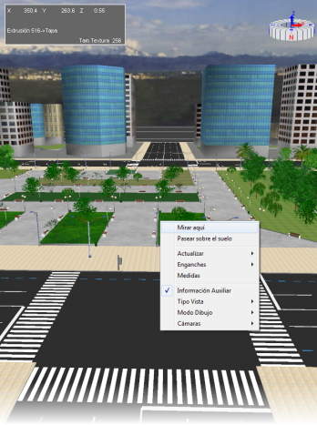
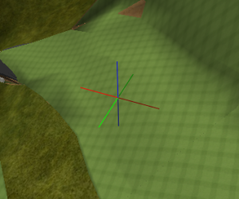
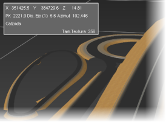
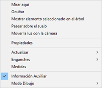
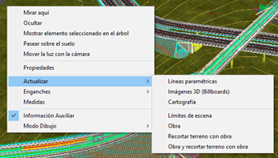
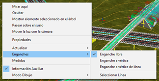
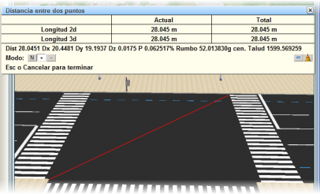
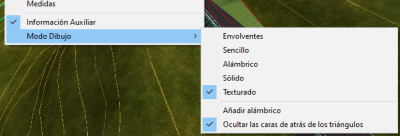

| |
|
3B GÖRÜNTÜLEME ALANI
|
|
Genel Bilgiler  3B Görünüm penceresi, sahnedeki tüm elemanların üç boyutlu olarak gösterildiği görsel ortamdır. Kullanıcı fare ile yaklaşabilir, uzaklaşabilir, kamera referansını değiştirebilir vb. Kısacası, sahneyi keşfedebilir. Ayrıca, bazı özelliklerinin düzenlenmesi ve değiştirilmesi amacıyla 3B elemanların seçilebildiği bir ortamdır. Görüntüleme, her zaman sahne üzerinde 'uçan' ve belirli bir referans noktasına yönelen bir 'kamera' nesnesi aracılığıyla sağlanır. Varsayılan olarak, referans noktası pencerenin merkezinde yer alır. Kameranın kontrolü esas olarak fare aracılığıyla, tek tıklama, çift tıklama veya basılı tutup sürükleme gibi farklı eylemlerle gerçekleştirilir:

Kamera döndürüldüğünde, yön bulmayı kolaylaştırmak için kameranın baktığı referans noktasının nerede olduğunu gösteren bir referans eksen sistemi (triedro) görüntülenecektir. Bu özellik, eksenler ve ızgara seçeneklerinden devre dışı bırakılabilir. Yardımcı Bilgi: İmleç Bilgisi Fare imleci Sanal 3B penceresi üzerinde hareket ettirildiğinde, sol üst köşede "imleç bilgisi" görüntülenecektir; bu, fare imlecinin üzerinden geçtiği nesne hakkında bilgi veren küçük bir penceredir. Burada koordinatlar, nesnenin adı ve söz konusu nesneye bağlı olarak bazı ek veriler görünür: dosya yolu, imlecin bulunduğu noktanın ekseni ve kilometresi vb. İmleç bilgisi, bağlam menüsünde görünen Yardımcı Bilgi kutucuğunun işareti kaldırılarak devre dışı bırakılabilir. Bağlam Menüsü Sanal 3B penceresi içinde sağ tuşa basıldığında, bağlam menüsü görünür: her zaman görünen bazı seçenekler ile seçilen nesneye göre değişen diğer seçenekleri içeren bir menü. En sık kullanılan seçeneklerden bazıları şunlardır: Buraya Bak BIM Ağacı bağlam menüsündeki Nesneye Bak seçeneği ile aynıdır: Kamera referansını nesnenin üzerine yerleştirir, böylece kamera ona "bakar". Gizle BIM Ağacındaki adının yanındaki kutucuk devre dışı bırakılmış gibi, seçili nesneyi gizler. Ekseni Kilometreye Göre Kes Mevcut ekseni belirtilen kilometreye göre keser ve kamera referansını bu noktanın üzerine yerleştirir. Seçili elemanı ağaçta göster BIM Ağacı bağlam menüsündeki Nesneye Yakınlaş seçeneğinin ters işlevini sağlar: BIM ağacının görünümünü Sanal 3B penceresinde seçilen nesneye götürür ve seçer. Zemin Üzerinde Dolaş Sahnenin bağlam menüsündeki bu seçenek etkinleştirildiğinde, klavye okları veya fare ile yapılan hareketlerin, kullanıcı sahne üzerinde 'yürüyormuş' gibi gerçekleştirilmesi sisteme bildirilir. Sistem, kameranın altındaki yüzeyin kotunu otomatik olarak belirler ve kameranın kotunu yüzeyin 2 metre üzerine ayarlar. Yapılandırma'da, klavye oklarına her basıldığında ne kadar metre ileri veya geri gidileceği ayarlanarak ilerleme hızı değiştirilebilir. Özellikler Seçili nesnenin Özellikler penceresini açar. Güncelle Sahne üzerine yerleştirilen 3B geometri, uygulama tarafından çeşitli anlarda oluşturulur. Haritacılıkta, üçgenlenmiş dijital modelde, bir koridor projesinin eksenlerinde veya semboller ve hücrelerde (3B görüntülerle temsil edilebilir) değişiklik yapıldığında, bunu programa 'bildirmek' gerekir. Bu seçenek, kullanıcının bu hesaplamaların yapıldığı anı kontrol etmesini sağlar. Koridor projeleri için, hangi eksenlerin değiştiğini kontrol eden ve ilgili geometriyi oluşturan özel bir sistem sunulur. Bu durumda, bağlam menüsünde görünen Güncelle seçeneği seçilmelidir. Genellikle sahnenin boyutlarındaki önemli bir değişiklik, ızgaraların doğru konumda olmamasına neden olabilir. Güncelle → Sahne Sınırları seçeneğiyle, sahnenin kapladığı 3B alan yeniden hesaplanır ve ızgaralar ile 3B uzay eksenleri doğru konumlarına yerleştirilir. Yakalamalar Nesnelerin oluşturulması veya değiştirilmesi sırasında, farenin kenar köşe noktalarını, haritacılık çizgilerinin köşe noktalarını ve noktaları kullanmasını zorunlu kılmak amacıyla referanslar kullanmak gerekir. Kullanıcının kullanabileceği üç tür yakalama vardır:
Ölçümler Klavyedeki F4 tuşuyla olduğu gibi ölçüm modunu etkinleştirir. Belirli ölçümler yapmak için Sanal 3B penceresinde iki noktaya tıklamayı sağlar: 2B ve 3B mesafeler, azimut, eğim vb.  Yardımcı bilgi İmleç bilgisi penceresini etkinleştirir veya devre dışı bırakır. Çizim Modu Görüntüleme türü ve görünümü açısından kullanıcı tarafından seçilebilecek çeşitli olasılıklar mevcuttur:
|